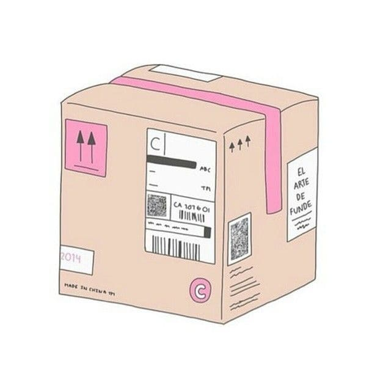

Il existe plusieurs solutions afin de réduire l’impact du E-commerce sur l’environnement et celui de la pollution numérique.
LES LIVRAISONS
Source : Pinterest justin_evans
Commençons par le plus évident : les livraisons. C’est le moyen de pollution le plus connu du E-commerce.
- Pour éviter les allers-retours inutiles du transport, la meilleure solution est le point-relais. Il permet de regrouper plusieurs commandes à la fois en un seul trajet.
- Bannir la livraison express à domicile qui est plus polluante. Les camions de marchandises ne transportent que quelques colis, en urgence, sans être remplis entièrement. Les livraisons standards permettent d’optimiser la cargaison des camions en réduisant le nombre de trajets.
- Lorsque c’est possible et que les sites le proposent, choisir des modes de livraisons éco-responsables.
- Être sûr de ses achats afin de ne pas faire de retour de produits et ainsi ne pas doubler l’émission de CO2 de la livraison.
- Grouper un maximum d’achats sur une même commande pour éviter un colis avec un seul produit et plusieurs livraisons.
- Acheter sur des sites de e-commerce locaux afin de réduire la distance de livraison, et donc de réduire l’émission de CO2.
INTERNET
Source : Pinterest Freepik
Continuons avec l’utilisation d’internet:
- Privilégier des moteurs de recherches écologiques tels que «Ecosia » ou «Lilo».
Ecosia est une entreprise Allemande dont l’objectif est la reforestation partout dans le monde. Une grande partie des bénéfices générés par l’utilisation d’Ecosia sert à planter des arbres. Elle est, depuis 2019, entièrement alimentée par énergie solaire et renouvelable.
«Lilo» est une entreprise Française dont la moitié de son chiffre d’affaire finance des projets sociaux et environnementaux. Les utilisateurs choisissent parmi les organisations représentées sur Lilo, celles qu’ils souhaitent soutenir.
Retrouvez Ecosia ici et Lilo ici.
Les recherches que vous faites rapportent en moyenne 30 euros par an au navigateur que vous utilisez.
- Il est aussi important de prendre le temps de bien formuler ses requêtes afin d’éviter d’en faire plusieurs puisque chaque requête pollue.
- Mettez en favori les sites que vous visitez fréquemment afin de limiter les requêtes. En allant directement à l’adresse du site, vous divisez par 4 les émissions de gaz à effet de serre.
- Fermez vos onglets inutiles, ils font tourner des serveurs qui consomment beaucoup d’énergie.
LES EMBALLAGES

Source : Pinterest We Heart It
Pour finir, les emballages :
- Recycler les emballages par nous-mêmes est la solution la plus simple à mettre en place.
Pour les mails :
- Limiter la taille des pièces jointes, n’envoyer des pièces jointes que si c’est nécessaire.
- Nettoyer régulièrement sa boite mail.
- Se désabonner des newsletters inutiles.
Pour les réseaux sociaux :
- Éviter de poster des photos inutiles.
- viter de se connecter trop souvent.
Pour les vidéos streaming :
- Si l’on possède le DVD, on le regarde plutôt que de le regarder en streaming
- Visionner la vidéo en basse qualité
- Ne pas lancer de vidéos streaming si on n’a pas beaucoup de temps
- Pour la musique, on ne met pas la vidéo, on écoute juste l’audio sur une plateforme ou encore mieux si vous avez le CD, mettez-le !